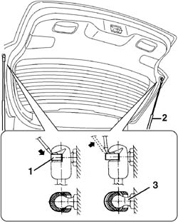

7015A28 L/H OR R/H TAILGATE TELESCOPIC STRUT (ONE) - R+R
- Path
- Procedures > 70 FITTINGS > 7015 TAILGATE/FLAP > 7015A TAILGATE ASSEMBLY > 7015A28 L/H OR R/H TAILGATE TELESCOPIC STRUT (ONE) - R+R
- Kind
- repair procedure (removal / refitting; the operation number is the code)
- Applies to
- all engines; all production periods
- Interactive page
- https://sloeber94.github.io/elrnDB-fCrm/en/#/194000945
Applies to: all engines; all production periods
 Removing
Removing
 Refitting
Refitting- Open the tailgate and support it appropriately.
1. Using a screwdriver, release the retaining springs from both ends (without removing them).
2. Remove the telescopic strut.
3. Undo the ball pins, if necessary.

Applies to: all engines; all production periods
Refitting
Removing- Check that the telescopic strut is not damaged.
- If removed, retighten the ball pins.
Component | Fastening | dia | Value (daNm) | Validity |
|---|---|---|---|---|
TAILGATE STRUT | Pin | M8 | 1,6 ÷ 2,4 |
- Refit the telescopic strut press fitting the ends in the securing pins.
- Fit the retaining springs.
- Check that the telescopic strut is working and that the tailgate is correctly supported.